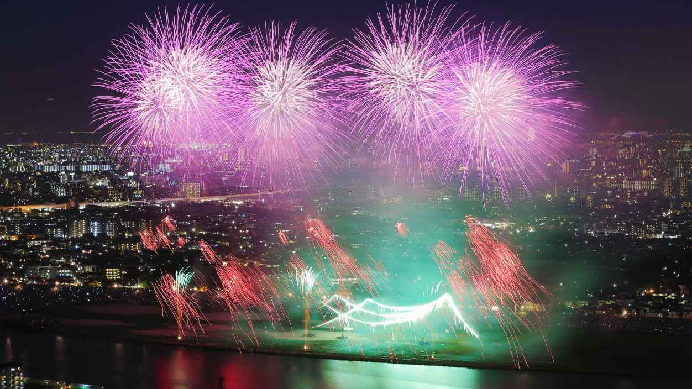
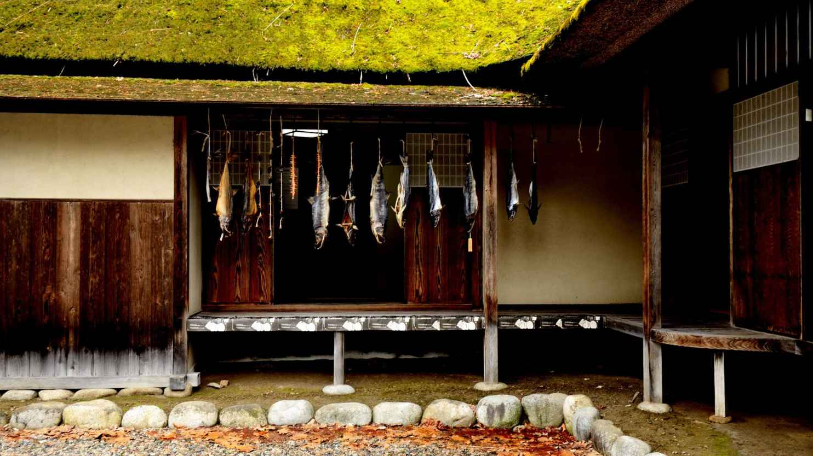

| 日本の情景五十一選: 経済産業省「PHOTO METI プロジェクト」 | |
| 経済産業省 | |
| (2016) | |
本書について
美しい山、美しい川、美しい海、美しい四季、美しい街、美しい人の心。
この国には、たくさんの美しい景色がある。
ようこそ。日本へ。
あなたの旅が、ここからはじまります。
本書は、日本の経済産業省が観光の促進を目的として、国内の観光名所をフリー素材として公開しているプロジェクトPHOTO METI PROJECT において公開されている素材を、ライセンスに基づき編集し再配布しているものです。
PHOTO METI PROJECT 利用規約
https://photo.kankouyohou.com/terms.html
本著掲載のすべての画像は、経済産業省2016年8月4日制定の上記規約に基づき「（経済産業省、クリエイティブ・コモンズ・ライセンス 表示4.0 国際）を画像サイズのみ改変して作成」しています。
上記のサイトでは、国内の美しい風景や祭りの様子などを堪能できるだけでなく、混雑状況や宿泊状況などの情報も確認できますので、ぜひアクセスしてみてください。
本書では電子書籍という性質上、動きや画像の迫力などその魅力を伝えきれていません。ぜひ実際のサイトにアクセスしてみてください。そして実際の場所に行くきっかけともなれば幸いです。
また、ダウンロードも可能になっていて、ライセンスに基づく限りはどなたでも利用にできるようになっており、誰でもが利用することが可能です。
本書をご覧になられたかたが、この国を再発見する、または情報発信するきっかけになれば幸いです。
日本は、こんなに美しい。
編集：吉田喜彦 カグア！
北海道
能取岬
【Hokkaido Cape Notoro 北海道 能取岬】（経済産業省、クリエイティブ・コモンズ・ライセンス 表示4.0 国際）
宮城県
気仙沼港 内湾
【Miyagi Inner Bay, Kesennuma Port 宮城県 気仙沼港 内湾】（経済産業省、クリエイティブ・コモンズ・ライセンス 表示4.0 国際）
山形県
立石寺
【Yamagata Risshakuji Temple 山形県 立石寺】（経済産業省、クリエイティブ・コモンズ・ライセンス 表示4.0 国際）
蔵王温泉スキー場 樹氷
【Yamagata "Snow Monsters", Zao Onsen Ski Resort 山形県 蔵王温泉スキー場 樹氷】（経済産業省、クリエイティブ・コモンズ・ライセンス 表示4.0 国際）
福島県
さざえ堂
【Fukushima Sazae-do Hall 福島県 さざえ堂】（経済産業省、クリエイティブ・コモンズ・ライセンス 表示4.0 国際）
国宝 白水阿弥陀堂
【Fukushima Shiramizu Amida-do Hall (National Treasure) 福島県 国宝 白水阿弥陀堂】（経済産業省、クリエイティブ・コモンズ・ライセンス 表示4.0 国際）
茨城県
塚崎の獅子舞
【Ibaraki Tsukazaki Lion Dance 茨城県 塚崎の獅子舞】（経済産業省、クリエイティブ・コモンズ・ライセンス 表示4.0 国際）
境リバーサイドパーク
【Ibaraki Sakai Riverside Park 茨城県 境リバーサイドパーク】（経済産業省、クリエイティブ・コモンズ・ライセンス 表示4.0 国際）
群馬県
赤谷湖 鯉のぼり
【Gunma Carp Streamers, Akaya Lake 群馬県 赤谷湖 鯉のぼり】（経済産業省、クリエイティブ・コモンズ・ライセンス 表示4.0 国際）
真沢の森 棚田

【Gunma Rice Terrace, Sanazawanomori 群馬県 真沢の森 棚田】（経済産業省、クリエイティブ・コモンズ・ライセンス 表示4.0 国際）
埼玉県
富和鋳造
【Saitama Tomiwa Chuzo 埼玉県 富和鋳造】（経済産業省、クリエイティブ・コモンズ・ライセンス 表示4.0 国際）
千葉県
富士山とスカイツリー
【Chiba Mt. Fuji and Tokyo Skytree, View from I-link Town Observatory 千葉県 富士山とスカイツリー】（経済産業省、クリエイティブ・コモンズ・ライセンス 表示4.0 国際）
市川市民納涼花火大会

【Chiba Ichikawa fireworks festival 千葉県 市川市民納涼花火大会】（経済産業省、クリエイティブ・コモンズ・ライセンス 表示4.0 国際）
東京都
小石川後楽園

【Tokyo Koishikawa Korakuen Garden 東京都 小石川後楽園】（経済産業省、クリエイティブ・コモンズ・ライセンス 表示4.0 国際）
神奈川県
湯河原梅林
【Kanagawa Yugawara Plum Grove 神奈川県 湯河原梅林】（経済産業省、クリエイティブ・コモンズ・ライセンス 表示4.0 国際）
湯かけ祭り
【Kanagawa Hot Spring Water Splashing Festival 神奈川県 湯かけ祭り】（経済産業省、クリエイティブ・コモンズ・ライセンス 表示4.0 国際）
新潟県
夏の宵
【Niigata "A Summer Evening", Shirasagi Forest Park 新潟県 夏の宵】（経済産業省、クリエイティブ・コモンズ・ライセンス 表示4.0 国際）
彌彦神社 相撲場
【Niigata Sumo Ring, Yahiko-jinja Shrine 新潟県 彌彦神社 相撲場】（経済産業省、クリエイティブ・コモンズ・ライセンス 表示4.0 国際）
若林邸

【Niigata Wakabayashi-tei House 新潟県 若林邸】（経済産業省、クリエイティブ・コモンズ・ライセンス 表示4.0 国際）
お茶摘み
【Niigata Tea Leaves Picking 新潟県 お茶摘み】（経済産業省、クリエイティブ・コモンズ・ライセンス 表示4.0 国際）
富山県
雨晴海岸
【Toyama Amaharashi Beach 富山県 雨晴海岸】（経済産業省、クリエイティブ・コモンズ・ライセンス 表示4.0 国際）
石川県
蟹淵

【Ishikawa Ganbuchi 石川県 蟹淵】（経済産業省、クリエイティブ・コモンズ・ライセンス 表示4.0 国際）
福井県
養浩館庭園
【Fukui Yokokan Garden 福井県 養浩館庭園】（経済産業省、クリエイティブ・コモンズ・ライセンス 表示4.0 国際）
鉾島
【Fukui Hokojima Island 福井県 鉾島】（経済産業省、クリエイティブ・コモンズ・ライセンス 表示4.0 国際）
長野県
新海三社神社 三重塔
【Nagano Three-storied Pagoda, Shinkaisansha-jinja Shrine 長野県 新海三社神社 三重塔】（経済産業省、クリエイティブ・コモンズ・ライセンス 表示4.0 国際）
榊祭り
【Nagano Sakaki Festival 長野県 榊祭り】（経済産業省、クリエイティブ・コモンズ・ライセンス 表示4.0 国際）
硫黄岳 爆裂火口
【Nagano Explosion Crater, Mt. Iodake 長野県 硫黄岳 爆裂火口】（経済産業省、クリエイティブ・コモンズ・ライセンス 表示4.0 国際）
静岡県
修善寺温泉街
【Shizuoka Shuzenji Onsen Town 静岡県 修善寺温泉街】（経済産業省、クリエイティブ・コモンズ・ライセンス 表示4.0 国際）
駿河湾
【Shizuoka Suruga Bay 静岡県 駿河湾】（経済産業省、クリエイティブ・コモンズ・ライセンス 表示4.0 国際）
愛知県
吉田神社
【Aichi Yoshida-jinja Shrine 愛知県 吉田神社】（経済産業省、クリエイティブ・コモンズ・ライセンス 表示4.0 国際）
丈山苑
【Aichi Jozan-en Garden 愛知県 丈山苑】（経済産業省、クリエイティブ・コモンズ・ライセンス 表示4.0 国際）
三重県
鼓ヶ浦海岸
【Mie Tsuzumigaura Beach 三重県 鼓ヶ浦海岸】（経済産業省、クリエイティブ・コモンズ・ライセンス 表示4.0 国際）
伊賀上野城
【Mie Iga-Ueno Castle 三重県 伊賀上野城】（経済産業省、クリエイティブ・コモンズ・ライセンス 表示4.0 国際）
京都府
久美浜湾
【Kyoto Kumihama Bay 京都府 久美浜湾】（経済産業省、クリエイティブ・コモンズ・ライセンス 表示4.0 国際）
立岩
【Kyoto Tateiwa Rock 京都府 立岩】（経済産業省、クリエイティブ・コモンズ・ライセンス 表示4.0 国際）
大阪府
高石市の工場夜景
【Osaka Factory Night view of Takaishi 大阪府 高石市の工場夜景】（経済産業省、クリエイティブ・コモンズ・ライセンス 表示4.0 国際）
兵庫県
姫路城
【Hyogo Himeji Castle 兵庫県 姫路城】（経済産業省、クリエイティブ・コモンズ・ライセンス 表示4.0 国際）
岡山県
八塔寺
【Okayama Hattoji Temple 岡山県 八塔寺】（経済産業省、クリエイティブ・コモンズ・ライセンス 表示4.0 国際）
広島県
灰ヶ峰の夜景
【Hiroshima Night View from Mt. Haigamine 広島県 灰ヶ峰の夜景】（経済産業省、クリエイティブ・コモンズ・ライセンス 表示4.0 国際）
豊町御手洗のまち並み
【Hiroshima Streetscape of Yutakamachi-Mitarai 広島県 豊町御手洗のまち並み】（経済産業省、クリエイティブ・コモンズ・ライセンス 表示4.0 国際）
山口県
角島大橋
【Yamaguchi Tsunoshima-ohashi Bridge 山口県 角島大橋】（経済産業省、クリエイティブ・コモンズ・ライセンス 表示4.0 国際）
東後畑棚田の農業

【Yamaguchi Farmer in Higashi-ushirobata Rice Terrace 山口県 東後畑棚田の農業】（経済産業省、クリエイティブ・コモンズ・ライセンス 表示4.0 国際）
香川県
金刀比羅宮
【Kagawa Kotohira-gu Shrine 香川県 金刀比羅宮】（経済産業省、クリエイティブ・コモンズ・ライセンス 表示4.0 国際）
愛媛県
亀老山から望む来島海峡大橋
【Ehime Kurushima-kaikyo-ohashi Bridges, from Mt. Kiro 愛媛県 亀老山から望む来島海峡大橋】（経済産業省、クリエイティブ・コモンズ・ライセンス 表示4.0 国際）
鈍川渓谷
【Ehime Nibukawa Gorge 愛媛県 鈍川渓谷】（経済産業省、クリエイティブ・コモンズ・ライセンス 表示4.0 国際）
福岡県
つづら棚田と彼岸花
【Fukuoka Tsuzura Rice Terrace and Cluster Amaryllis 福岡県 つづら棚田と彼岸花】（経済産業省、クリエイティブ・コモンズ・ライセンス 表示4.0 国際）
初夏のつづら棚田
【Fukuoka Tsuzura Rice Terrace in an Early Summer 福岡県 初夏のつづら棚田】（経済産業省、クリエイティブ・コモンズ・ライセンス 表示4.0 国際）
熊本県
水田
【Kumamoto Paddy fields 熊本県 水田】（経済産業省、クリエイティブ・コモンズ・ライセンス 表示4.0 国際）
菊池渓谷
【Kumamoto Kikuchi Gorge 熊本県 菊池渓谷】（経済産業省、クリエイティブ・コモンズ・ライセンス 表示4.0 国際）
沖縄県
平久保崎
【Okinawa Cape Hirakubosaki 沖縄県 平久保崎】（経済産業省、クリエイティブ・コモンズ・ライセンス 表示4.0 国際）
名蔵湾
【Okinawa Nagura Bay 沖縄県 名蔵湾】（経済産業省、クリエイティブ・コモンズ・ライセンス 表示4.0 国際）
撮影地全リスト
Hokkaido Cape Notoro 北海道 能取岬
Miyagi Inner Bay, Kesennuma Port 宮城県 気仙沼港 内湾
Yamagata Risshakuji Temple 山形県 立石寺
Yamagata "Snow Monsters", Zao Onsen Ski Resort 山形県 蔵王温泉スキー場 樹氷
Fukushima Sazae-do Hall 福島県 さざえ堂
Fukushima Shiramizu Amida-do Hall (National Treasure) 福島県 国宝 白水阿弥陀堂
Ibaraki Tsukazaki Lion Dance 茨城県 塚崎の獅子舞
Ibaraki Sakai Riverside Park 茨城県 境リバーサイドパーク
Gunma Carp Streamers, Akaya Lake 群馬県 赤谷湖 鯉のぼり
Gunma Rice Terrace, Sanazawanomori 群馬県 真沢の森 棚田
Saitama Tomiwa Chuzo 埼玉県 富和鋳造
Chiba Mt. Fuji and Tokyo Skytree, View from I-link Town Observatory 千葉県 富士山とスカイツリー
Chiba Ichikawa fireworks festival 千葉県 市川市民納涼花火大会
Tokyo Koishikawa Korakuen Garden 東京都 小石川後楽園
Kanagawa Yugawara Plum Grove 神奈川県 湯河原梅林
Kanagawa Hot Spring Water Splashing Festival 神奈川県 湯かけ祭り
Niigata "A Summer Evening", Shirasagi Forest Park 新潟県 夏の宵
Niigata Sumo Ring, Yahiko-jinja Shrine 新潟県 彌彦神社 相撲場
Niigata Wakabayashi-tei House 新潟県 若林邸
Niigata Tea Leaves Picking 新潟県 お茶摘み
Toyama Amaharashi Beach 富山県 雨晴海岸
Ishikawa Ganbuchi 石川県 蟹淵
Fukui Yokokan Garden 福井県 養浩館庭園
Fukui Hokojima Island 福井県 鉾島
Nagano Three-storied Pagoda, Shinkaisansha-jinja Shrine 長野県 新海三社神社 三重塔
Nagano Sakaki Festival 長野県 榊祭り
Nagano Explosion Crater, Mt. Iodake 長野県 硫黄岳 爆裂火口
Shizuoka Shuzenji Onsen Town 静岡県 修善寺温泉街
Shizuoka Suruga Bay 静岡県 駿河湾
Aichi Yoshida-jinja Shrine 愛知県 吉田神社
Aichi Jozan-en Garden 愛知県 丈山苑
Mie Tsuzumigaura Beach 三重県 鼓ヶ浦海岸
Mie Iga-Ueno Castle 三重県 伊賀上野城
Kyoto Kumihama Bay 京都府 久美浜湾
Kyoto Tateiwa Rock 京都府 立岩
Osaka Factory Night view of Takaishi 大阪府 高石市の工場夜景
Hyogo Himeji Castle 兵庫県 姫路城
Okayama Hattoji Temple 岡山県 八塔寺
Hiroshima Night View from Mt. Haigamine 広島県 灰ヶ峰の夜景
Hiroshima Streetscape of Yutakamachi-Mitarai 広島県 豊町御手洗のまち並み
Yamaguchi Tsunoshima-ohashi Bridge 山口県 角島大橋
Yamaguchi Farmer in Higashi-ushirobata Rice Terrace 山口県 東後畑棚田の農業
Kagawa Kotohira-gu Shrine 香川県 金刀比羅宮
Ehime Kurushima-kaikyo-ohashi Bridges, from Mt. Kiro 愛媛県 亀老山から望む来島海峡大橋
Ehime Nibukawa Gorge 愛媛県 鈍川渓谷
Fukuoka Tsuzura Rice Terrace and Cluster Amaryllis 福岡県 つづら棚田と彼岸花
Fukuoka Tsuzura Rice Terrace in an Early Summer 福岡県 初夏のつづら棚田
Kumamoto Paddy fields 熊本県 水田
Kumamoto Kikuchi Gorge 熊本県 菊池渓谷
Okinawa Cape Hirakubosaki 沖縄県 平久保崎
Okinawa Nagura Bay 沖縄県 名蔵湾